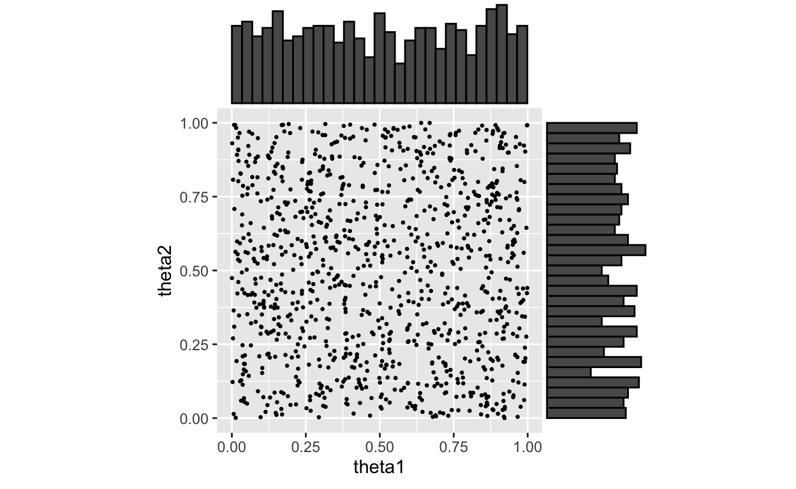
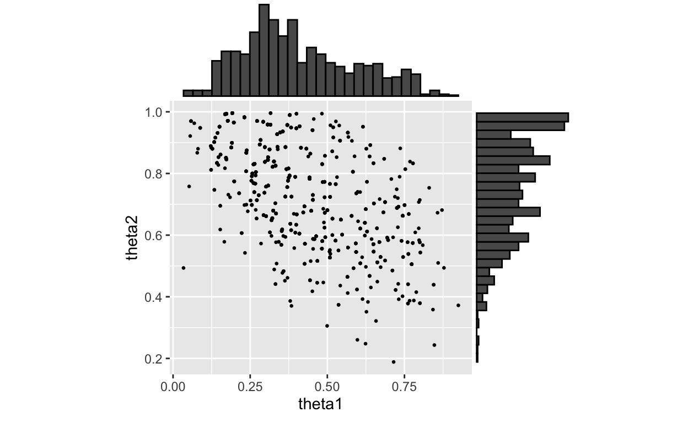
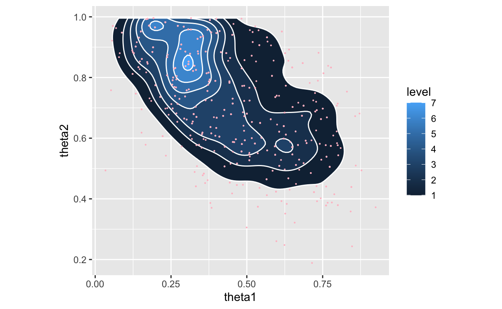
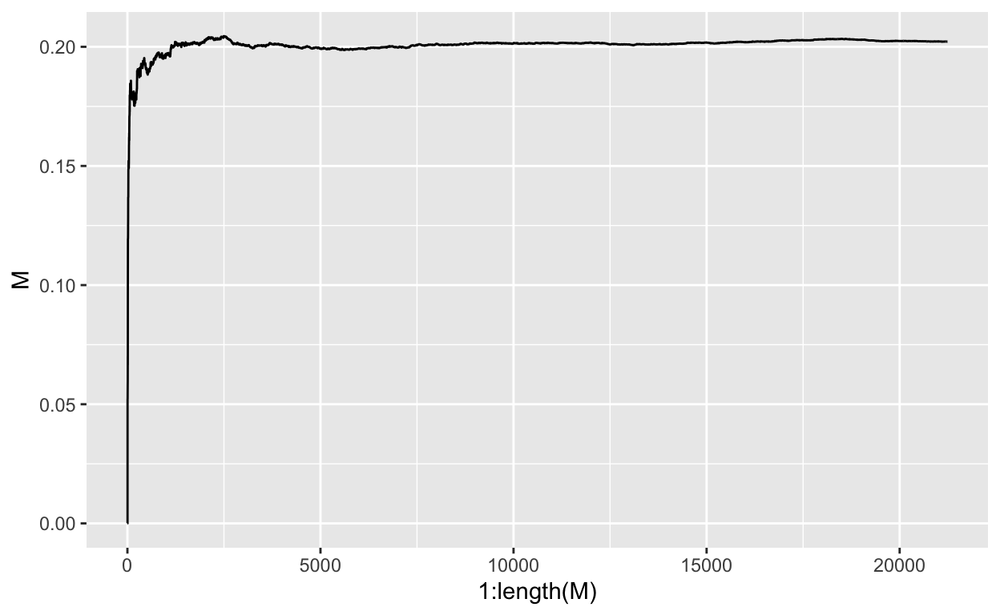
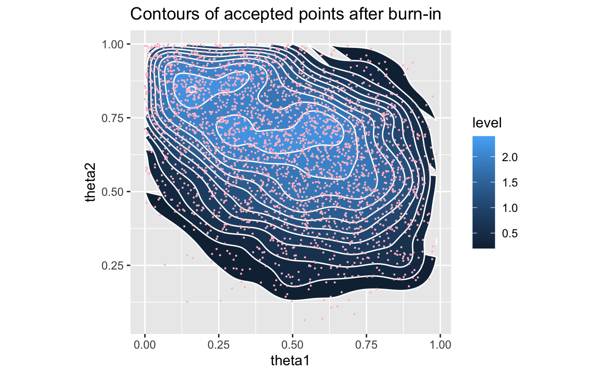
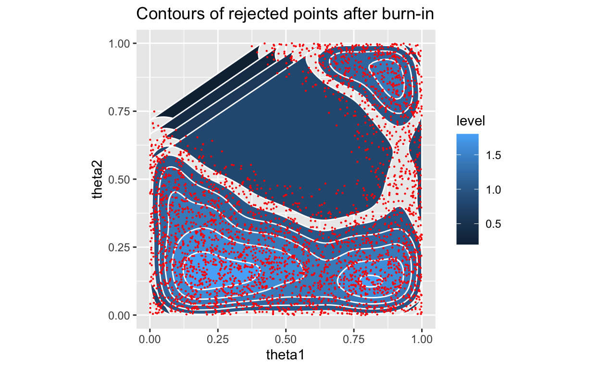

Details of why MCMC for me.
I have always liked simulating stuff. Trying to code up a game of life, looking at fractal evolutions, etc. The first time I saw a random walk, I was super intrigued. In the Virginia Tech Statistics masters program, I had the fortune of taking Scotland Lemon’s MCMC course. Not only is he a fantastic teacher, the material was just what I had been wanting: some serious compute topics.
Here, I am going to start with what I see as the motivation for MCMC as detailed in:
Smith and Gelfand, Bayesian statistics without tears: A sampling-resampling perspective, 1992 DOI:10.1080/00031305.1992.10475856.
Bayesian learning is a highly daunting subject to the uninitiated. To boil it down, it is stated as updating beliefs (developing a new understanding) through data. More statistically, updating prior knowledge through the likelihood function given observed data. The whole tenant is given in three equations:
\[ \begin{equation} \tag{1} p(\theta|\textbf{X}) = \frac{\ell(\theta, \textbf{X}) \ast p(\theta)}{\int{\ell(\theta, \textbf{X}) \ast p(\theta) d\theta}} \end{equation} \]
Further, if \(\theta\) is composed of multiple random variables, eg \(\theta=\{\phi,\psi\}\) where we are only interested in, say, \(\phi\), we can refocus the above by integrating out the effect of the uninteresting variable \(\psi\):
\[ \begin{equation} \tag{2} p(\phi|\textbf{X}) = \int \ell(\phi,\psi\, \textbf{X}) d\psi \end{equation} \]
Similarly, if we are interested in some sort of summary stat, for instance, we want location or spread (mean/variance), we can compute these in the normal way as:
\[ \begin{equation} \tag{3} E[m(\theta)|\textbf{X}] = \int m(\theta)p(\theta)|\textbf{X}) d\theta \end{equation} \]
where m(\(\ast\)) is chosen for the desired summary stat. These three equations, taken directly from Smith and Goldfand, are the foundation of Bayesian learning and at the same time are the fundamentals of Monte Carlo methods.
Life is about having one thing and needing another, statistics and data are no different. Suppose we can get samples from g(\(\theta\)) but need them from h(\(\theta\)), we might end at the following questions stated by Smith and Gelfand:
So, the answers turns out to be yes.
Smith and Gelfand go on the describe the \(Reject\ Method\) and give an example. I will repeat both and provide some code.
We want h(\(\theta\)), but have g(\(\theta\)). Additionally, we know \(h(\theta) = \frac{f(\theta)}{\int{f(\theta) d\theta}}\) and that there exists some constant \(M>0\) where \(\frac{f(\theta)}{g(\theta)} \le M\).
Procedure:
Any accepted \(\theta\) is a random variate from \(h(\theta) = \frac{f(\theta)}{\int f(\theta) d\theta}\). The proof is relatively simple and given in about 3 lines in the Smith and Gelfand paper where I will point you if you need to see it.
We do have one item to clean up, if we don’t know M:
\[ \begin{eqnarray} \tag{4} M &=& \int f(\theta) d\theta \approx \frac{1}{n} \sum_i \omega_i \text{ , where } \\ \tag{5} \omega_i &=& \frac{f(\theta_i)}{g(\theta_i)} \end{eqnarray} \] It took me seeing the above in (4) to finally get why Scotland took so much time on Monte Carlo integration. It’s just hidden everywhere.
Or alternatively, we could use \(Weighted\ Bootstrapping\) where we draw \(\theta^{\ast}\) from a realization of \(\theta = \{\theta_1 \dots \theta_n\}\). From this we can calculate: \[ \begin{equation} q_i = \frac{\omega_i}{\sum_j \omega_j} \text{ ; } \omega_{[i,j]} \text{ given in (5)} \end{equation} \]
Now \(q_i\) is our sampling probability for drawing from the \(\theta_i\)’s.
We have prior knowledge in \(p(\theta)\) and want to update our knowledge base given new information via the posterior \(p(\theta | \textbf{X})\).
If we let: \[ \begin{eqnarray} \tag{6} f_x(\theta) &=& \ell(\theta|\textbf{X}) p(\theta) \\ \tag{7} g(\theta) &=& p(\theta) \text{, further, if we know } \hat{\theta}_{ML} \\ \tag{8} M &=& \ell(\hat{\theta|}\textbf{X}) \end{eqnarray} \]
So, returning to our procedure, we need to accept with probability u
\[ \begin{eqnarray} \tag{9} u &\le& \frac{f(\theta)}{Mg(\theta)} \\ &\le& \frac{\ell(\theta|\textbf{X}) p(\theta)}{\ell(\hat{\theta|}\textbf{X})p(\theta)} \\ &\le& \frac{\ell(\theta|\textbf{X})}{\ell(\hat{\theta|}\textbf{X})} \end{eqnarray} \]
Well, that is cool. Essentially the likelihood is acting as the modulator for the resampling probability. Highly likely \(\theta\)’s will have higher probability of being sampled as indicated by the observed data.
Smith and Gelfand reworked an example originally given by McCullagh and Nelder, Generalized Linear Models, 1989. Essentially, consider two conditionally independent (given their parameters) random variables observed 3 times through their sum:
\[ \begin{eqnarray} \tag{10} \textbf{X}_{i1} &\sim& Binomial(n_{i1}, \theta_1) \\ \tag{11} \textbf{X}_{i2} &\sim& Binomial(n_{i2}, \theta_2) \\ \tag{12} \textbf{Y}_i &=& \textbf{X}_{i1} + \textbf{X}_{i2}; i \in \{1,2,3\} \end{eqnarray} \]
We can create the likelihood as (fixing mistake in paper):
\[ \begin{equation} \tag{13} \ell(\theta_1,\theta_2 | \textbf{Y}, i \in \{1,2,3\}) = \prod_{i=1}^{3} \left[\sum_{j_i} {{n_{i1}}\choose{j_i}} {{n_{i2}}\choose{y_i-j_i}} \ast \theta_1^{j_i}(1-\theta_1)^{n_{i1}-y_i}\theta_2^{y_i-j_i}(1-\theta_2)^{n_{i2}-y_i+j_i}\right] \end{equation} \]
And are given the following as data:
| 1 | 2 | 3 | |
|---|---|---|---|
| \(n_{i1}\) | 5 | 6 | 4 |
| \(n_{i2}\) | 5 | 4 | 6 |
| \(y_i\) | 7 | 5 | 6 |
Ok, so our data shows observed sums of \(Y_i =X_1 + X_2\) going from 5 to 7 given the unknown \(\theta_j, j \in \{1,2\}\).
Following the paper, we will consider priors on both \(\theta_1\) and \(\theta_2\) as uniform(0,1) where the authors generated about 1000 \(\theta_1, \theta_2\) pairs. Following suit:
set.seed(15239) # just a random number as seed
observations <- 1000
t1 <- runif(n=observations, min=0, max=1)
t2 <- runif(n=observations, min=0, max=1)
theta_draws <- data.frame(theta1=t1, theta2=t2)

We now sample from these priors using the weighted bootstrap proceedure as outlined above. To get at the weights, we need to start by calculating \(q_i\). Remembering \(\omega_i = \frac{f(\theta_i)}{g(\theta_i)}\), \(g(\theta_i) = p(\theta_i)\) and \(f(\theta_i) = \ell(\theta_i|\textbf(X_i))p(\theta_i)\)
\[ \begin{eqnarray} q_i &=& \frac{\omega_i}{\sum_{j=1}^n \omega_j} \\ &=& \frac{\frac{f(\theta_i)}{g(\theta_i)}}{\sum_{j=1}^n \frac{f(\theta_j)}{g(\theta_j)}} \\ &=& \frac{\ell(\theta_i|\textbf(X_i))}{\sum_{j=1}^n \ell(\theta_j|\textbf(X_j))} \end{eqnarray} \] I have been a little lax in the i, j in this. Here i refers to the ith draw from the priors and j runs across all draws. Note that as we inspect (13), we encounter \(j_i\). This represents the possible values of \(\textbf{X}_i\) given the parameters, \(n_{i1}\) and \(n_{i2}\), and observed \(y_i\), so \(max(0, y_i-n_{i2}) \le j_i \le min(n_{i1}, y_i)\). Let’s code this up and get our \(q_i\)’s.
ji_min_max <- data.frame(min=c(2,1,0),max=c(5,5,4))
omega <- rep(1,observations)
for(k in 1:observations){
for(i in 1:3){
ji <- ji_min_max[i,1]
temp_omega <- 0
while(ji<ji_min_max[i,2]){
temp_omega <- temp_omega +
choose(test_data[1,i],ji)*choose(test_data[2,i],test_data[3,i]-ji)*
(theta_draws$theta1[k]^ji)*((1-theta_draws$theta1[k])^(test_data[1,i]-ji))*
(theta_draws$theta2[k]^(test_data[3,i]-ji))*
((1-theta_draws$theta2[k])^(test_data[2,i]-test_data[3,i]+ji))
ji <- ji+1
}
omega[k] <- omega[k] * temp_omega
}
}
q_i <- omega/sum(omega)
Now do the draws according to the \(q_i\)’s and calc the posterior.
thetas_index <- sample(1:observations, size=1000, replace=TRUE, prob=q_i)
h <- omega[thetas_index]

Note, no point in the above posterior is NOT in the previous plot of prior draws. The paper appears to have used a different set of points for the plot of the posterior.
Before I close, I would like to do this another way, let’s estimate M on the fly and use “burn-in” to iteratively converge on M and do a real accept/reject. I will again pull from uniforms as my prior (future post to play with priors?), but will keep track of the proposals vs accept/reject to see if an interesting plot emerges.
ji_min_max <- data.frame(min=c(2,1,0),max=c(5,5,4))
#quick funtion to calc f(theta)=likelihood, basically took from above
lhood <- function(t1=0.5,t2=0.5,tdata=test_data,ji_minimax=ji_min_max){
for(i in 1:3){
ji <- ji_minimax[i,1]
temp_likelihood <- 0
current_likelihood <- 1
while(ji<ji_minimax[i,2]){
temp_likelihood <- temp_likelihood +
choose(tdata[1,i],ji)*choose(tdata[2,i],tdata[3,i]-ji)*
(t1^ji)*((1-t1)^(tdata[1,i]-ji))*
(t2^(tdata[3,i]-ji))*((1-t2)^(tdata[2,i]-tdata[3,i]+ji))
ji <- ji+1
}
current_likelihood <- current_likelihood * temp_likelihood
}
return(current_likelihood)
}
stored_thetas <- rbind(data.frame(theta1=0,theta2=0,likelihood=0,u=0,accept=1,M=0),
data.frame(theta1=0,theta2=0,likelihood=0,u=0,accept=1,M=0))
k <- 2
previous_M <- 0
## actual accept/reject
while(sum(stored_thetas$accept)<10000){
k <- k+1
# 1. make proposal(s)
# 2. generate u from uniform(0,1)
stored_thetas <- rbind(stored_thetas,
data.frame(theta1=runif(1,0,1),theta2=runif(1,0,1),
u=runif(1,0,1),likelihood=0,accept=0,M=0))
# 3. if u <= f/(Mg) then accept, else reject, repeat
stored_thetas$likelihood[k] <- lhood(stored_thetas$theta1[k],
stored_thetas$theta2[k])
# calc running M real quick
M <- mean(stored_thetas$likelihood[stored_thetas$accept>0])
# accpet or reject?
stored_thetas$accept[k] <-
ifelse(stored_thetas$u[k]<stored_thetas$likelihood[k]/M,1, 0)
# update M if needed, this is for status indicator
stored_thetas$M[k] <-
ifelse(stored_thetas$accept[k]==1,M,stored_thetas$M[k-1])
if(stored_thetas$accept[k]==1){
M_change <- stored_thetas$M[k]-stored_thetas$M[k-1]
}
# little status indicator
if((k %% 1000)==0){
cat("current k: ", k, " current accepted: ", sum(stored_thetas$accept),
" current/change in M:", M," : ", M_change, "\n",sep="")
}
}
current k: 1000 current accepted: 452 current/change in M:0.1967587 : -0.000284144
current k: 2000 current accepted: 932 current/change in M:0.2024283 : -9.629906e-05
current k: 3000 current accepted: 1417 current/change in M:0.2009935 : -4.114977e-05
current k: 4000 current accepted: 1865 current/change in M:0.2008423 : -9.366024e-05
current k: 5000 current accepted: 2333 current/change in M:0.1992392 : -4.590816e-05
current k: 6000 current accepted: 2804 current/change in M:0.1992795 : 4.192012e-06
current k: 7000 current accepted: 3296 current/change in M:0.1997426 : -1.830395e-05
current k: 8000 current accepted: 3768 current/change in M:0.2011892 : 1.26757e-05
current k: 9000 current accepted: 4201 current/change in M:0.2017363 : -1.827057e-05
current k: 10000 current accepted: 4690 current/change in M:0.2014897 : 4.914835e-05
current k: 11000 current accepted: 5187 current/change in M:0.2015779 : 1.636161e-05
current k: 12000 current accepted: 5657 current/change in M:0.2017894 : -8.658366e-06
current k: 13000 current accepted: 6116 current/change in M:0.2009656 : -2.302136e-05
current k: 14000 current accepted: 6585 current/change in M:0.2010067 : 6.980897e-06
current k: 15000 current accepted: 7054 current/change in M:0.2017694 : 4.251824e-06
current k: 16000 current accepted: 7536 current/change in M:0.2019006 : 6.399018e-06
current k: 17000 current accepted: 8011 current/change in M:0.202628 : -9.512693e-06
current k: 18000 current accepted: 8475 current/change in M:0.2031243 : 1.733376e-06
current k: 19000 current accepted: 8943 current/change in M:0.2029498 : 2.093441e-05
current k: 20000 current accepted: 9452 current/change in M:0.2023991 : 2.138806e-06
current k: 21000 current accepted: 9901 current/change in M:0.2022406 : -1.338133e-05final M is: 0.2021795
OK, so, we see a slightly different final location for our \(\theta\)’s, but that is expected as we are sampling more finely and letting the accept-reject criterion determine which prior values are more likely. An interesting feature to me is the accept region appears more able to expand into the reject region than the converse. Perhaps I am just looking at it too critically.
Things to think about for a future post:
If you see mistakes or want to suggest changes, please create an issue on the source repository.
Text and figures are licensed under Creative Commons Attribution CC BY 4.0. Source code is available at https://github.com/rsettlage/rsettlage.github.io, unless otherwise noted. The figures that have been reused from other sources don't fall under this license and can be recognized by a note in their caption: "Figure from ...".
For attribution, please cite this work as
Settlage (2022, May 31). Robert E. Settlage: MCMC inspiration. Retrieved from https://rsettlage.github.io/posts/2022-05-28-mcmc-inspiration/
BibTeX citation
@misc{settlage2022mcmc,
author = {Settlage, Robert},
title = {Robert E. Settlage: MCMC inspiration},
url = {https://rsettlage.github.io/posts/2022-05-28-mcmc-inspiration/},
year = {2022}
}